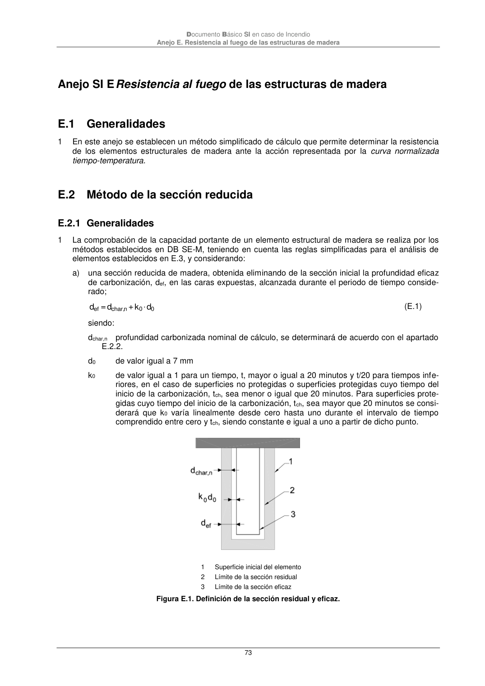

DB-SI Seguridad en caso de incendio · edición 2025-03-04 · capa oficial
Documento DB-SI-oficial · SHA-256 del PDF 0a2e78cd62471d9cc5cfe2efbc6aa39fdbad73c124aea7b039f9de96c141e105
Copia fiel del PDF fuente · Fuente oficial
Ficha de la disposición en la fuente oficial
Formatos: JSON del segmento · Markdown
E.2 Método de la sección reducida E.2.1 Generalidades E.2.1 Generalidades 1 La comprobación de la capacidad portante de un elemento estructural de madera se realiza por los métodos establecidos en DB SE-M, teniendo en cuenta las reglas simplificadas para el análisis de elementos establecidos en E.3, y considerando: a) una sección reducida de madera, obtenida eliminando de la sección inicial la profundidad eficaz de carbonización, def, en las caras expuestas, alcanzada durante el periodo de tiempo conside- rado; d k + d = d 0 0 n char, ef · (E.1) siendo: dchar,n profundidad carbonizada nominal de cálculo, se determinará de acuerdo con el apartado E.2.2. d0 de valor igual a 7 mm k0 de valor igual a 1 para un tiempo, t, mayor o igual a 20 minutos y t/20 para tiempos infe- riores, en el caso de superficies no protegidas o superficies protegidas cuyo tiempo del inicio de la carbonización, tch, sea menor o igual que 20 minutos. Para superficies prote- gidas cuyo tiempo del inicio de la carbonización, tch, sea mayor que 20 minutos se consi- derará que k0 varía linealmente desde cero hasta uno durante el intervalo de tiempo comprendido entre cero y tch, siendo constante e igual a uno a partir de dicho punto. 1 Superficie inicial del elemento 2 Límite de la sección residual 3 Límite de la sección eficaz Figura E.1. Definición de la sección residual y eficaz.
